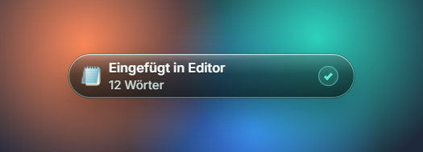
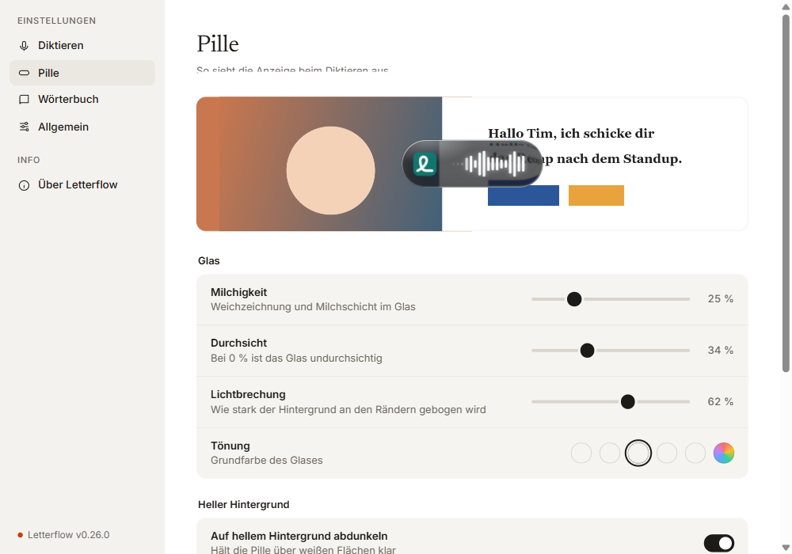
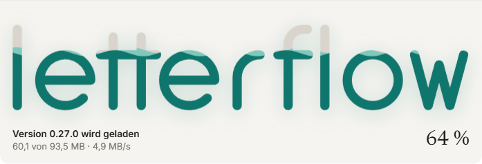

Du sprichst,
Letterflow schreibt.
Taste halten, sprechen, loslassen: Letterflow setzt deine Worte genau dort ein, wo der Cursor steht. Vollständig auf deinem PC, ohne Konto und ohne Cloud.
Kostenlos · Windows 10 und 11
Drei Handgriffe. Kein weiteres Fenster.
Letterflow wartet unauffällig im Infobereich und schreibt in jedes Programm, in dem du gerade arbeitest.
Taste halten
Halte die rechte Strg-Taste gedrückt. Oder tippe sie zweimal an, um freihändig zu diktieren.
Sprechen
So natürlich, wie du redest, mit Pausen und „ähm“. Die Pille zeigt dir, dass Letterflow zuhört.
Loslassen
Dein Text erscheint sauber gesetzt im Eingabefeld, mit Satzzeichen und in deinen Schreibweisen.
Deine Worte verlassen nie deinen Rechner.
Spracherkennung und Glättung laufen vollständig lokal. Kein Konto, kein Server, kein Abo. Sind die Modelle einmal geladen, arbeitet Letterflow auch ganz ohne Internet.
- Das Mikrofon ist nur aktiv, solange du diktierst
- Diktate werden nicht protokolliert
- Bei Vollbildspielen und Präsentationen bleibt die Pille verborgen

Geschliffen, als hättest du es selbst geschrieben.
Füllwörter verschwinden, Selbstkorrekturen werden übernommen, und Kommas stehen dort, wo die Rechtschreibung sie verlangt, nicht nach jeder Atempause.
Überall dort, wo du schreibst.
Ob Word, E-Mail, Chat, Browser oder Notizen: Letterflow setzt den Text in genau das Fenster ein, in dem du begonnen hast. Die Pille zeigt dir dabei, welches Programm es ist.

Stets auf dem neuesten Stand.
Neue Versionen lädt Letterflow still im Hintergrund. Installiert wird beim nächsten Beenden oder mit einem Klick auf „Neu starten“. Deine Einstellungen bleiben dabei unberührt.

Bereit, wenn du es bist.
Einmal installieren, die Modelle laden lassen, lossprechen. Administratorrechte brauchst du dafür nicht, und alle weiteren Versionen kommen von selbst.
Letterflow für Windows herunterladenWas ist neu
- Installer startenÖffne Letterflow-Setup.exe in deinem Download-Ordner.
- Hinweis von WindowsLetterflow ist noch nicht signiert. Wähle „Weitere Informationen“ und dann „Trotzdem ausführen“.
- Modelle ladenBeim ersten Start einmalig rund 0,7 GB, danach läuft alles offline.